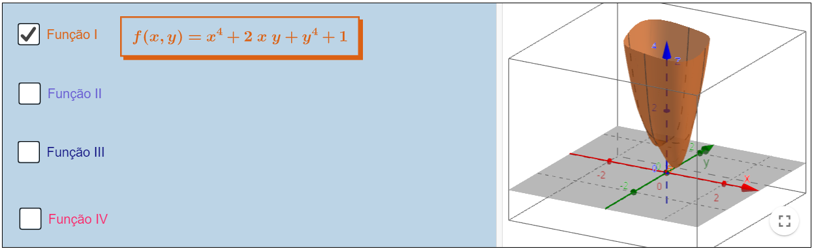
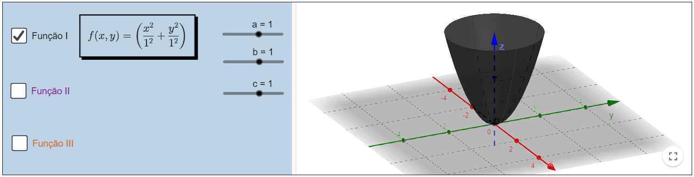

Funções escalares de várias variáveis
Domínio e imagem de uma função escalar de várias variáveis
Definição
Dado um conjunto \(Dom \; F\subseteq \; R^{n}\) com \(n \geq 2\), uma função escalar de várias variáveis é uma correspondência, \(F:Dom(F)\subseteq R^{n}\rightarrow \mathbb{R})\),
que a cada coordenada \(\;t \;\epsilon \; \displaystyle Dom(F) \; \) na forma \(t \; = \; (t_{1},t_{2},...,t_{n}) \; \), associa um e apenas um \(z \; \epsilon \; \mathbb{R} \).
No nosso caso trabalharemos com funções escalares com domínio sendo um subconjunto de \(R^{2} \; \) ou \( \; R^{3} \). Logo nossa função será de uma das seguintes formas:
\(\bullet \; F \; : \; Dom(F) \; \subseteq \; \mathbb{R}^{2}\rightarrow \), tal que para cada \((x,y) \; \mapsto z \), onde \((x,y) \; \epsilon \; Dom(F) \).
\(\bullet \; F \; : \; Dom(F) \; \subseteq \; \mathbb{R}^{3}\rightarrow \), tal que para cada \((x,y,z) \; \mapsto t \), onde \((x,y,z) \; \epsilon \; Dom(F) \).
Nos recursos abaixo é possível observar algumas funções escalares polinomiais com duas variáveis, algumas funções racionais e funções escalares básicas.
Obs: Sugerimos que ative uma função por vez, para uma melhor visualização do esboço. Para isso, desative a caixa clicando novamente antes de prosseguir para uma nova função.
Polinomiais
Exemplos básicos

No recurso abaixo é possível observar que, através do isolamento de uma variável e sua restrição para valores positivos ou negativos, é possível gerar uma função escalar de várias variáveis a partir de uma Superfície Quádrica (apresentada no capítulo 4 dessa obra).
Obs: No applet abaixo as barras deslizantes referem-se aos coeficientes das funções. Para uma melhor compreensão, ative a caixa de uma função e observe o que ocorre ao variar os valores de a, b e c.
Definição
O domínio de uma função \(F: \; Dom(F) \; \subseteq \; \mathbb{R}^{n}\rightarrow \mathbb{R} \) , com \(n\geq 2 \), é conjunto de pontos na forma \( (x_{1},x_{2},..,x_{n}) \) que quando aplicados em \(F\) retornam um valor real, ou seja, \( F(x_{1},x_{2},..,x_{n}) \mapsto z \; \) com \( z \; \epsilon \; \mathbb{R} \).
Definição
A imagem de uma função \( F: Dom(F) \; \subseteq \; \mathbb{R}^{n}\rightarrow \mathbb{R} \), com \( n\geq 2 \), é o subconjunto da reta real que é gerado pela função ao ser aplicada nos pontos do domínio. Ou seja \( z \; \epsilon \; Im(F) \),
se \( \exists (x_{1},x_{2},...,x_{n}) \; \epsilon \; Dom(F) \) tal que \( F(x_{1},x_{2},..,x_{n}) \mapsto z \; \) com \( z \; \epsilon \; \mathbb{R} \).
Observe os exemplos a seguir, neles é possível observar o domínio a esquerda, o esboço da função ao centro e o subconjunto da reta real que forma a imagem a direita.
No domínio, as barras deslizantes definem os valores embutidos na função. No gráfico, é possível manipular o ponto (x,y) a esquerda e observar a coordenada (x,y,z) percorrer a superfície.
Obs: Caso o ponto (x,y) retorne um ponto (x,y, f(x,y)) que não apareça na superfície, afaste o gráfico central para uma melhor visualização.
Exemplo I
Exemplo II

Exemplo III

Exemplo IV

Exemplo V

O conteúdo apresentado foi gerado através das notas da professora Denise de Oliveira Pinto, do Departamento de Matemática Aplicada da Universidade Federal Fluminense.
Co-autores: Author:Begoña Alarcón, Guilherme Cardoso Garcia de Carvalho, Raphael Odalvo.